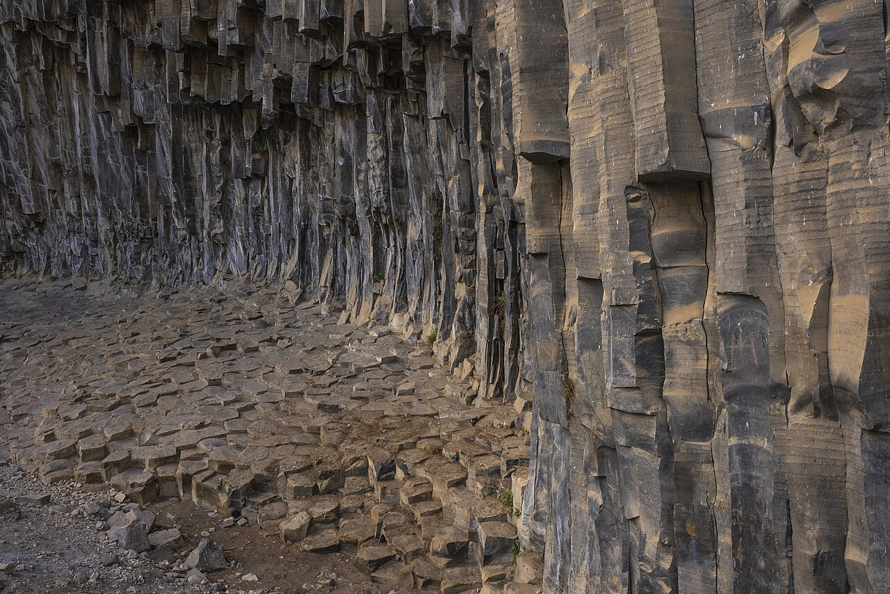
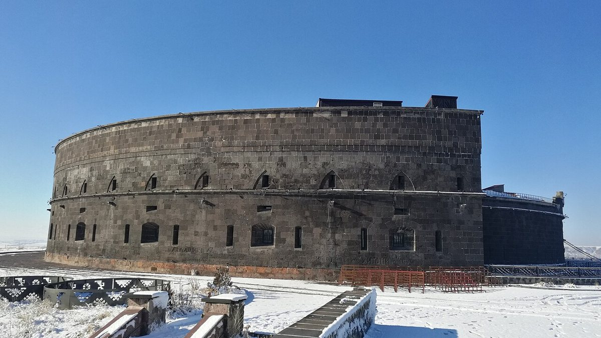
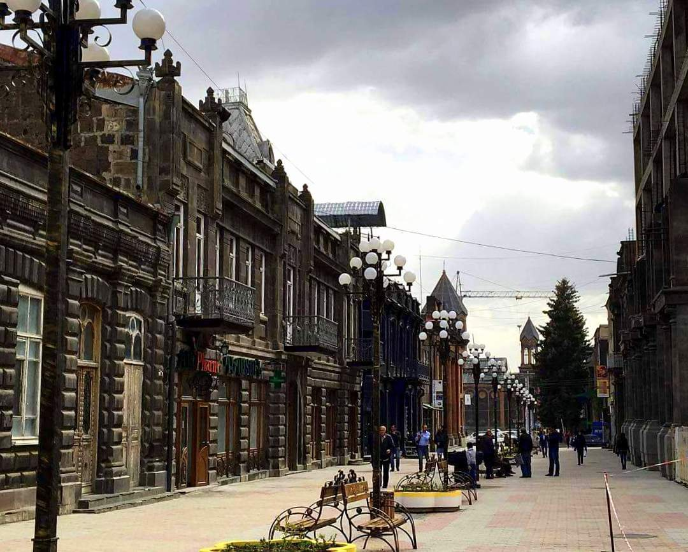

Yerevan City TourExplore the Armenian capital's famous landmarks, architecture, and vibrant atmosphere.History Museum of ArmeniaDiscover Armenia's rich history through archaeological finds and historical exhibits.VernissageExplore traditional Armenian handicrafts, souvenirs, artwork, and local creations.
Day 2
Ancient Temples & Natural Wonders
Garni TempleVisit Armenia's famous Greco-Roman-style pagan temple, surrounded by beautiful mountain scenery.

Symphony of StonesAdmire the impressive basalt columns formed by natural geological processes in the Garni Gorge.Geghard MonasteryDiscover a UNESCO World Heritage Site renowned for its medieval architecture and churches partly carved into rock.
Day 3
Lake Sevan & Beautiful Dilijan
Lake SevanEnjoy the breathtaking views of one of the largest high-altitude freshwater lakes in Eurasia.Sevanavank MonasteryVisit the historic monastery on the Sevan Peninsula, overlooking the blue waters of Lake Sevan.DilijanExplore this charming town, known for its forested surroundings and picturesque atmosphere.Haghartsin MonasteryDiscover a medieval monastery complex nestled among the forested mountains of Dilijan National Park.Parz LakeEnjoy a peaceful natural lake surrounded by the forests of Dilijan.
Day 4
Discover Gyumri

Gyumri City TourExplore Armenia's second-largest city, famous for its distinctive architecture, cultural heritage, and artistic traditions.

Historic Kumayri DistrictWalk through historic streets lined with traditional black and red tuff-stone buildings.Vardanants SquareVisit the central square and admire its important historic buildings and monuments.